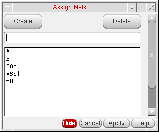

Assigning Instance Pins to a Net
If you place an instance in a layout that does not have a connectivity source, the software does not connect the instances to any net unless you specifically assign the instance pins to a net using the Assign Nets command.
You can also use Assign Nets to connect a new instance to an existing net in a design that has a connectivity source.
To assign the pins of an instance to a net:
- Place new instances in the layout using the Create – Instance command.
- Use the Annotation Browser assistant to display the incomplete nets in the canvas.
-
Choose Connectivity – Nets – Assign.
The layout window and the CIW prompt you to select a pin. -
Click a pin in one of the new instances you have placed.
You can select multiple pins to be attached to the same net.
The pin you select is highlighted. The layout window and the CIW prompt you to select a net. -
Click a pin that is already connected to the net you want to add the new pin to.
The flight lines representing that net are extended to show that the new pin has been added to the net. The CIW lists the name of the pin and the name of the net it was connected to.
The layout window and the CIW prompt you to select another pin to add to a net. -
Press
F3to display a list of all the nets in the layout.
The Assign Nets form is displayed.
 -
To add a pin you selected in the layout to a net listed in this form, click the name of the net in the form and then click Apply.
The flight lines representing that net are extended to show that the pin is added to the net. -
Press
Escto exit the command.
Related Topics
Return to top